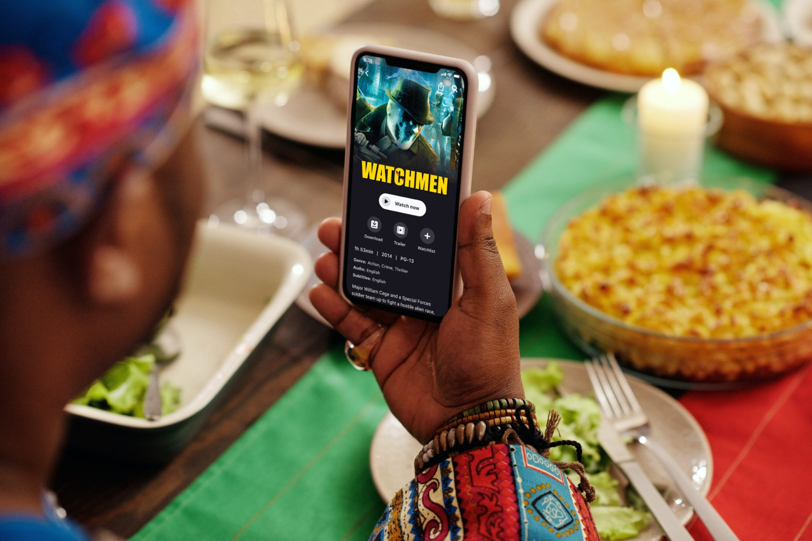
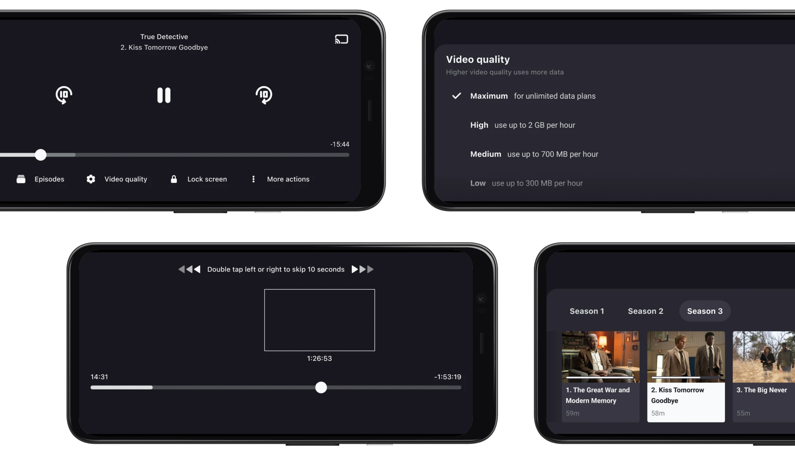
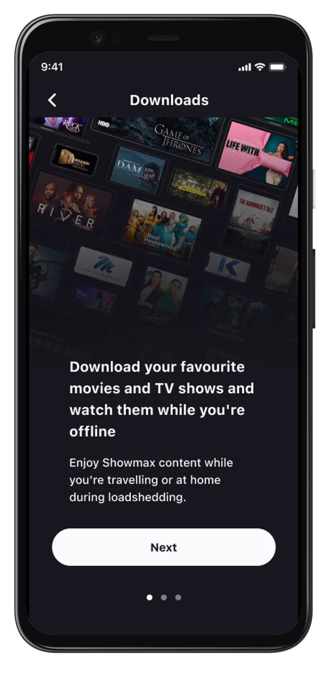
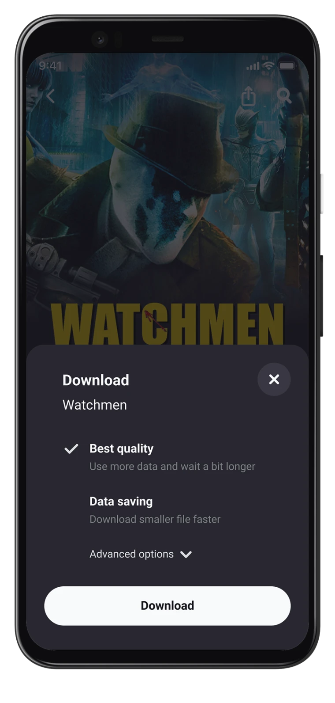
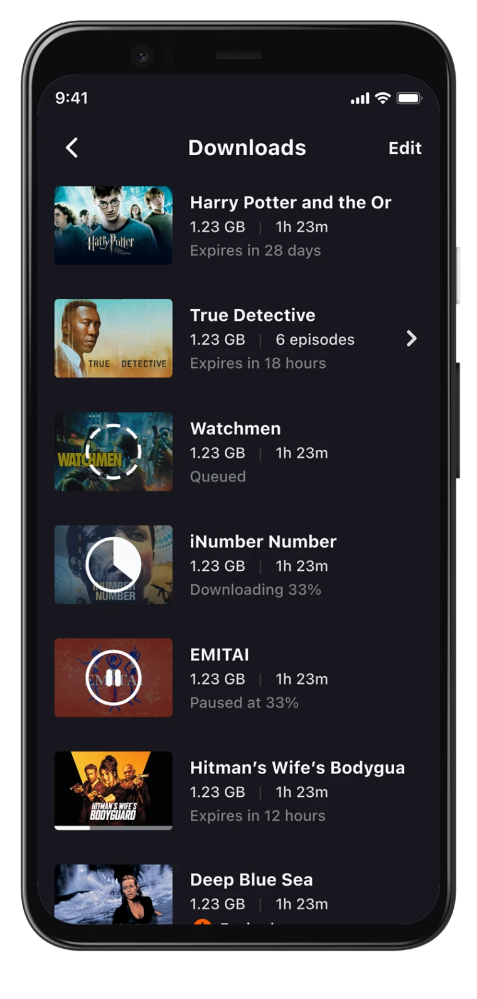
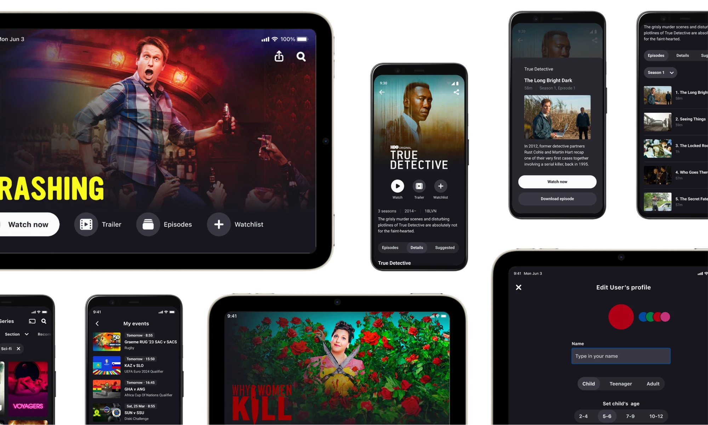

Designed a better mobile streaming experience for viewers where data is expensive, networks are unstable, and power cuts are routine.

Showmax serves customers across Africa, where streaming is shaped by very different constraints than in most Western markets. In many households, Android was the main or only device, and offline access, efficient playback, and fast content discovery had a direct impact on retention and viewing time.
Role
Product Designer, May 2020 – March 2024. Sole designer on the product, owning the mobile experience across Android and iOS in a continuous discovery setup.
Focus
Two customer interviews per week for two years, quarterly outcomes tied to retention, content discovery, and time spent streaming.
How I worked
Ran two customer interviews per week with my PM for more than two years. Designed the in-app recruitment form, structured the research repository, and worked from quarterly outcomes tied to retention, fast content discovery, and time spent streaming.
Used an Opportunity Solution Tree to connect user problems to testable assumptions and prioritise work based on evidence and shipping effort.
What we were solving
The top three problems were power cuts, network instability, and content discovery. Keeping people engaged during outages and always giving them something new to watch was not optional — it had a direct effect on revenue.
One assumption we spent time on was that customers found it hard to identify content that felt new on Showmax. That shaped how we thought about discovery.
App player
The player was crowded with unlabeled, technical controls most users did not trust or understand. That made the interface feel intimidating and left no real estate for the controls that actually mattered during playback.
We studied usage data and screen recordings to understand which features were used, which were ignored, and where users got stuck. That led to several concrete decisions: moving low-use features under an Advanced menu, keeping audio, subtitles, and video quality visible and clearly labelled, repositioning the timeline to reduce accidental system-gesture conflicts, and introducing gestures for playback, brightness, and volume.
I also introduced screen lock after repeated complaints in interviews from parents and grandparents whose kids kept interrupting playback. It became one of the most warmly received changes in app store reviews.

Downloads
Downloads were underused, even though they were one of the best tools for getting through power cuts and saving on data.
We found that large groups of users did not know the feature existed or did not understand what it was for. I redesigned the empty state into a three-step onboarding flow that explained the feature and nudged users toward finding something to download. I also cleaned up the UI, moved management actions into context sheets and separate screens, replaced technical file-size language with plain terms, and grouped TV episodes into folders by series and season.



Impact
of playbacks used lower video quality to save data
of users interacted with the episode list
of playbacks used the new gestures regularly
completed downloads in the following weeks
successful playbacks in the following weeks
change in usage from relocating low-use features
All metrics are hard numbers from month-to-month tracking across A/B tests and production rollouts.
Systems work
Built the mobile design system library collaboratively from scratch across squads and platforms, following platform-specific patterns for Android and iOS rather than forcing a single approach onto both. The library sped up prototyping, maintained consistency across the app, and made Design QA sharper and faster.

What I take from it
This was the role where I understood what continuous product improvement actually means in practice: not big launches, but a reliable system for learning, deciding, and shipping something better every few weeks. Working under real user constraints made every design decision feel consequential.